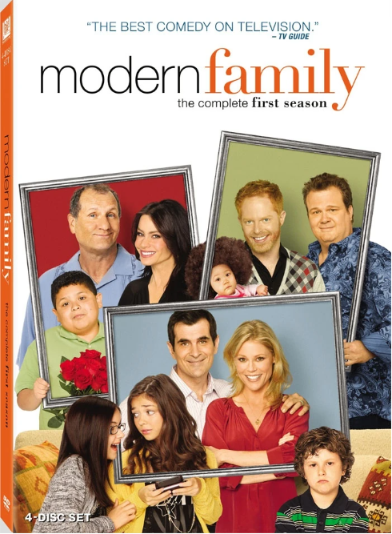

Background
Modern Family, created by Christopher Lloyd and Steven Levitan, is about a multigenerational family experiencing the joys and challenges of family life. The series is a mock documentary, or “mockumentary,” represented as being filmed by an unseen documentarian. It is a single-camera show with no This is some text.  laugh track. Characters often look directly at the camera and speak as though they are being interviewed. Modern Family features an ensemble cast and is known for its intelligent writing and earnest—never cynical—tone that finds affection, as well as comedy, in the struggles of family life.
The series begins with the introduction of three different, but related, families. Grumpy, no-nonsense middle-aged business executive Jay Pritchett (Ed O’Neill) is married to Gloria Delgado-Pritchett (Sofía Vergara), his beautiful, much-younger, second wife, who is an outspoken Colombian immigrant. They are raising Manny Delgado (Rico Rodriguez), Gloria’s good-hearted, sensitive, preteen son from her first marriage. Mitchell Pritchett (Jesse Tyler Ferguson), Jay’s son from his first marriage, lives with his partner, Cameron Tucker (Eric Stonestreet). Mitchell is an anxious, tightly wound lawyer, while Cameron is an outgoing music teacher. The couple adopts a Vietnamese baby, Lily Tucker-Pritchett (played in later seasons by Aubrey Anderson-Emmons), and Cameron decides to become a stay-at-home father. Claire Dunphy (Julie Bowen), Jay’s daughter from his first marriage, is married to Phil Dunphy (Ty Burrell). Claire is a stay-at-home mother who, like her brother Mitchell, is somewhat uptight, while Phil is a goofy real estate agent and amateur magician who thinks he’s a “cool dad.” Claire and Phil are raising their three children together: Haley Dunphy (Sarah Hyland), the eldest, is a silly rebellious teenager, while middle-child Alex Dunphy (Ariel Winter) is smart, responsible, and nerdy. Their youngest child, Luke Dunphy (Nolan Gould), is an affable and offbeat preteen.
Subheading
Modern Family addresses situations that many real-life families encounter, such as sibling rivalry, the growing pains of adolescence, the ups and down of parenting, conflicts between spouses (and former spouses), and career successes and failures. One significant storyline that extends across the series concerns Jay’s struggle to accept that Mitchell is gay. Jay works to overcome his homophobia, ultimately becoming accepting and proud of his son. The characters evolve personally and professionally throughout the series. Claire decides to enter the business world, working at the company that Jay founded and then becoming its chief executive officer. Gloria becomes a U.S. citizen, and she and Jay have a child, Joe Pritchett (played in later seasons by Jeremy Maguire). Cameron and Mitchell get married, and, in the series finale, they adopt another child. Former high-school football player Cameron becomes a successful football coach. Haley gives birth to twins and marries her on-again, off-again boyfriend Dylan Marshall (Reid Ewing). commodi at sit facere dicta sed eaque, eligendi consectetur asperiores fuga odio ab saepe incidunt obcaecati perferendis, iure reprehenderit accusantium ipsum dolorum aperiam neque. Corrupti vitae tempora repellendus numquam! Veniam quasi eius eum ratione natus doloremque recusandae consequuntur exercitationem?